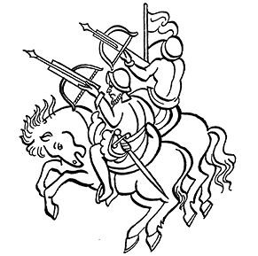

第十六章 特拉斯卡尔德卡尤特尔，
对一种已经终结的生活方式的回忆
导 言
对于悲歌，除在上面诸多文本的《战败者的见闻》中记录的以外还有很多，它们记录着过去发生的悲惨事件。尤其一个标题为“特拉斯卡尔德卡尤特尔”的悲歌。特拉斯卡尔德卡尤特尔意为“以特拉斯卡拉方式”，但这种悲歌并不一定专指卡斯蒂利亚人的盟友特拉斯卡拉的诗歌。它是一种由小鼓和笛子伴奏的表演形式。
它亦歌亦舞，以鲜活的方式表现了征服。歌谣中出现了几个非常著名的人物，其中就有瓜乌特莫克和他的盟友，特拉特洛尔克的指挥官，如克尤瓦瓦特辛和伊兹波通基，以及著名的墨西卡战将特米洛特辛——他同时还是个歌谣诗人。敌对一方，即埃尔南·科尔特斯一方的盟友有特斯科科人伊斯特利尔索奇特尔、瓦索特辛卡人奈皮洛特辛、特拉斯卡拉人索克腾卡特尔。此外还有这些小国的其他指挥官。
对于瓜乌特莫克，人们常用美丽的语言赞美他，说“他的话就是战斗之花”，同时他也使维奇尔特佩特尔，即蜂鸟山上的维奇洛波奇特利神庙感到惊奇。
本书中所收录的见证材料都来自印第安人用纳瓦特尔语书写的内容，但这首歌谣除有卡斯蒂利亚语译文还保留了纳瓦特尔语原文，就是奈查瓦尔克尤特尔和瓜乌特莫克的母语。这样，读到这首歌谣的人就能在舞蹈和音乐伴奏下，更好地想象征服的鲜活悲剧。这是对特诺奇蒂特兰人和特拉特洛尔克人反抗西班牙人斗争场面的追忆，再现了使用致命喷火武器的人如何成批屠杀那些手持盾牌和弓箭保卫自己城市和自己生命的人的场景。
这首歌谣和这里收录的其他见证都是印第安人对征服悲剧身临其境的回忆。它有助于再现和评价创造另一个不同墨西哥时所出现的暴力冲突。这个不同的墨西哥由今天的墨西哥人和未来的墨西哥人带着黎明之光的希望和意愿享居其上。
特拉斯卡尔德卡尤特尔
（以特拉斯卡拉方式）
我们来到了这里，来到了特诺奇蒂特兰，
你们要加油呀！
特拉斯卡拉人，瓦索特辛卡人
索克腾卡特尔如何倾听奈尔皮洛尼的话？
嗨，你们要加油呀！
我们勇敢的瓜乌腾克特利在大声喊叫，
他向队长喊着什么，
还向我们的母亲马林辛诉说着什么，
我们到达了萨卡尔腾克还来到了阿卡奇南克，
你们要多加油呀！
我们还是等着队长的船队吧，
他已经快到旗山，
正在遭受折磨的是
墨西哥的百姓，
嗨，你们要加油呀！
你们要帮助我们的首领，
他们手中都有金属制作的武器，
他们破坏了都城，
摧毁了墨西哥的精神文化，
嗨，你们要加油呀！
敲起你的手鼓，
你笑吧，你，伊斯特利尔索奇特尔，
他在这里，在墨西哥的
鹰门前手舞足蹈，在古阿古阿亚瓦延，在特玛拉卡蒂特兰，
都能见到你红色羽毛盾牌。
嗨，你们要加油呀！
对战争感到高兴的人，
迷恋武器的人，
他就是伊斯特利尔索奇特尔，
他就在这里，在墨西哥的
鹰门前手舞足蹈，
在古阿古阿亚瓦延，在特玛拉卡蒂特兰，
你能见到红羽毛的盾牌，
嗨，你们要加油呀！
当他们走过时，
我们见到了我们的子侄，
他们是阿纳瓦卡特辛的武士，
和奥托米军级武士特外特兹基迪。
嗨，你们要加油呀！
在短暂的时间里，
只一天，瓜乌特莫克，
你的话语成了战斗之花。
你金质鼻饰上的花纹，
迎着黎明发出奇异光芒；
棉花和克查尔羽毛制成的花饰也熠熠发光。
在维奇尔特佩特尔，即蜂鸟山，你都光芒四射，
嗨，你们要加油呀！
你受到了人民的热爱，
我们全城的人都向你投去花束，
难道你还羡慕别人什么？
你是有名望的人。
你金黄色的皮衣，
你棉花和克查尔羽毛制成的花饰也熠熠发光。
在维奇尔特佩特尔，即蜂鸟山，你都光芒四射，
嗨，你们要加油呀！
你们看好了，
那些带着盾牌跳舞的是什么人？
他们的面容像奥托米人。
难道特外特兹基迪和特克瓦特辛也要来？
但愿有人跳舞，
你们唱起来吧，我的小兄弟。
你们要加油呀，在每条道路上，
你，克阿依乌伊特尔，你，伊兹波通基，
难道是你们吗？
但愿有人跳舞，
你们唱起来吧，我的小兄弟。
我们的确放弃了我们的都城，
放弃了墨西哥-特诺奇蒂特兰，
你们要加油呀，你，克阿依乌伊特尔，你，伊兹波通基，
难道你们就要来了吗？
但愿有人跳舞，
你们唱起来吧，我的小兄弟。
你听我唱歌吧，
我说的是真话，我会大声说，
我们一定会回来，
从四面八方赶到特拉特洛尔克。
特拉斯卡拉人，事情一定是这样的，
你们唱起来吧，我的小兄弟。
我只看到了他，
我钦佩在那里的纳纳瓦卡特尔大人，
他佩戴着盾牌和利剑，
特拉斯卡拉人一直跟踪他，
还有卡斯蒂利亚人也尾随着他。
纳纳瓦卡特尔将他们甩在水边，
我们赶来了，
特拉斯卡拉人，一切都无济于事，
你们唱起来吧，我的小兄弟。
接着跳吧，奥吉斯特利大人，
接着唱吧，敲起您金色的小鼓，
那个发出绿松石般火焰的小鼓，
那是大人们，那些统领者留下的。
你要用小鼓给和我们在一起的
百姓带来快乐，
特拉斯卡拉人，瓦索特辛卡人，
和我们在一起。
在墨西哥出现了
指挥官古伊特里奇维特尔，
还出现了特拉齐特佩克和特皮索瓦特辛，
所有人身上涂着各种色彩，
手里都拿着盾牌，
和我们站在一起，
是特拉斯卡拉人，瓦索特辛卡人。
阿尔伯博卡大人在这里，在墨西哥，
他来这里跳着盾牌舞，
在大人前面，
是那些手持白花盾牌的人，
和那些被捆绑着用作牺牲的人，
特拉斯卡拉人，瓦索特辛卡人。
大人确实赶上了，
他手持西班牙人的投枪，
在大人前面，
是那些手持白花盾牌的人，
和那些被捆绑着用作牺牲的人，
特拉斯卡拉人，瓦索特辛卡人。
这是大人们的特古伊维特尔节，
莫德尔乌伊特辛赶来，他把盾牌扔在地上。
人们陆续到来，
他们夺去了征服者能吐火的武器。
阿托奇说，
大家跳舞吧，
特拉斯卡拉人，瓦索特辛卡人。
就在特古伊维特尔节这天，
雄鹰之墙坍塌了，
美洲豹之墙倾覆了，
人们陆续赶来，
他们夺走了征服者能吐火的武器。
阿托奇说，
大家跳舞吧，
特拉斯卡拉人，瓦索特辛卡人。
你，特拉卡特卡特尔，猛将特米洛特辛，
你要多多努力呀，
卡斯蒂利亚人已经从他们的战船上冲了过来。
奇南巴内卡人，
战斗中他们被围了，
特诺奇蒂特兰人，特拉特洛尔克人，
也在战斗中被围。
克尤瓦瓦特辛是特拉克查卡特尔，
是他拦住了卡斯蒂利亚人的去路。
阿尔科瓦坎人出发了，
来到特佩亚克大道，
特诺奇蒂特兰人，特拉特洛尔克人，
在战斗中被围。
特诺奇蒂特兰人付出了代价，
他们的子女们、碧玉指挥官
和墨西哥的古斯曼都饱受煎熬。
特诺奇蒂特兰人，特拉特洛尔克人，
在战斗中被围。
绿松石色的火枪，
其声如雷，硝烟四散。
瓜乌特莫克被俘，
王室贵族逃散。
特诺奇蒂特兰人，特拉特洛尔克人，
在战斗中被围。
你们要记住，特拉斯卡拉人，我们的子侄，
我们在克尤纳卡兹克是怎么做的，
墨西卡女人把自己的脸涂脏，
她们还是被主人挑来拣去。
西纳丘克特辛、奇马尔帕基尼特辛他们永远不会满足，
就像我们在克尤纳卡兹克所做的那样。
墨西卡女人把自己的脸涂脏，
她们还是被主人挑来拣去。
特外索罗特辛被囚在索克腾卡特尔，
特拉迈迈特辛、索克腾特辛和卡斯塔涅达
一直迫害他。
快跑吧，我们的小兄弟们，
你，奈皮洛特辛，
特拉迈迈特辛、索克腾特辛和卡斯塔涅达
一直迫害你们。
用了九天时间，
他们把瓜乌特莫克和特莱潘吉特萨特辛
带到克尤阿坎。
这些大人们都被捕了。
特拉克特辛你给他们鼓鼓劲，
你说：
我的，我们的子侄，
我们被用贵金属绳捆绑住了，
大人们也被捕了。
瓜乌特莫克大人说：
我的小侄女，
你在何处被俘被囚？
你与谁共处一室？
是队长大人，
你就是堂娜伊莎贝尔，
我的小侄女。
的确，大人们都已被捕。
